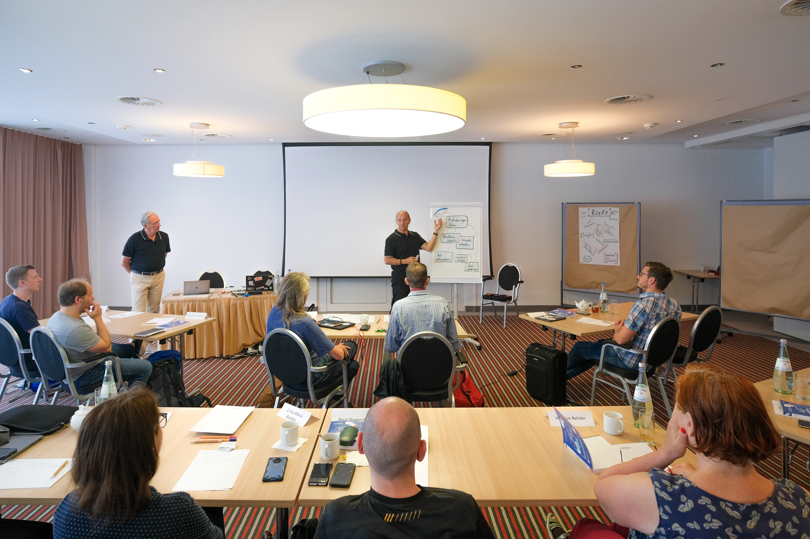

the architecture ecosystem
the architecture ecosystemTemplate
Twelve stable places for architecture knowledge.
Template · method · canvas · examples · people
arc42 connects a stable template with practical methods, one-page canvases, real examples, training, tools, and the people who have kept all of it moving since 2005.
One structure. Many ways in. Built by a few people, improved by thousands of conversations.arc42, alive since 2005
You may need a template, a quick canvas, a worked example, or simply a conversation about a difficult decision.
Twelve stable places for architecture knowledge.
A feedback loop for recurring architecture work.
One page for the first useful conversation.
Real systems with visible tradeoffs and decisions.

Practice architecture with people who have done the work.



A personal system, not a personal brand
Names appear beside translations, examples, formats, guidance, and decisions. The site can be playful without pretending arc42 arrived fully formed from an anonymous organization.